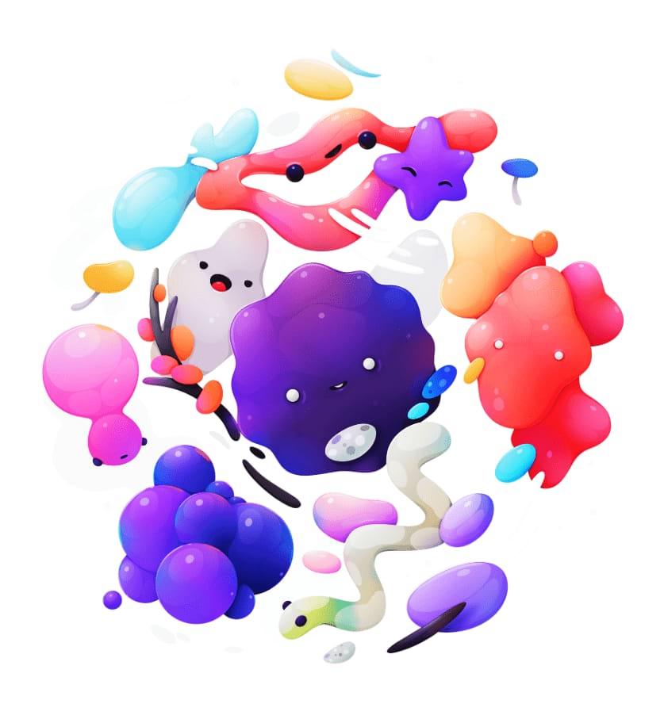

Curves adjustment
Adjust the color, tone and alpha channels with the curves adjustment, either on individual channels or by adjusting the master curve.


Adjust the color, tone and alpha channels with the curves adjustment, either on individual channels or by adjusting the master curve.
 Apply this adjustment via the Adjustment button on the Layers panel or via Layer > New Adjustment.
Apply this adjustment via the Adjustment button on the Layers panel or via Layer > New Adjustment.
The following settings can be adjusted in the dialog:
On the curves graph, do any of the following: